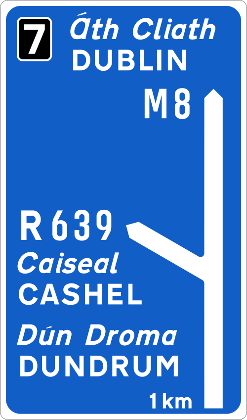
Map Type Advance Direction Sign (motorway)
It is what it says.
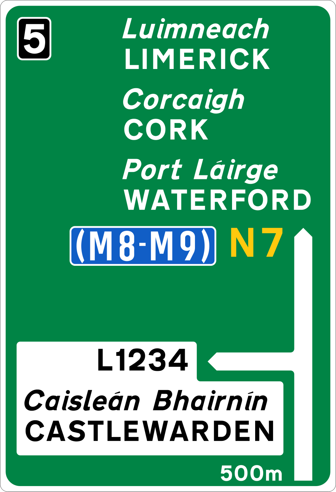
Map Type Advance Direction Sign
For national roads, i'm sure.
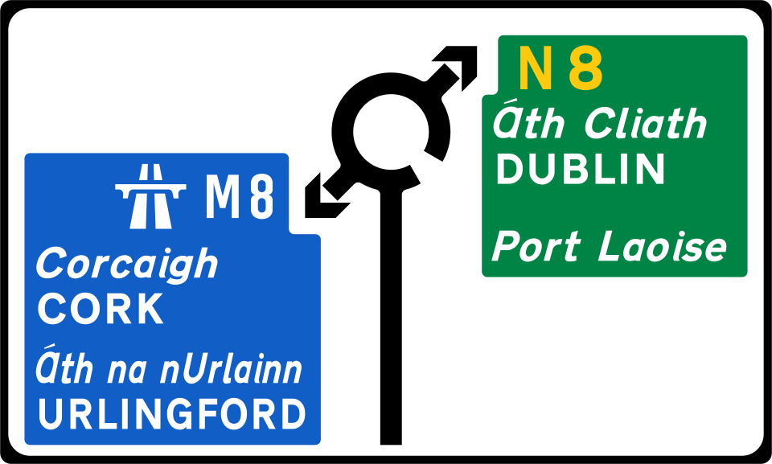
Map Type Advance Direction Sign (regional road, roundabout)
That's cool, Cork and Dublin in on sign.
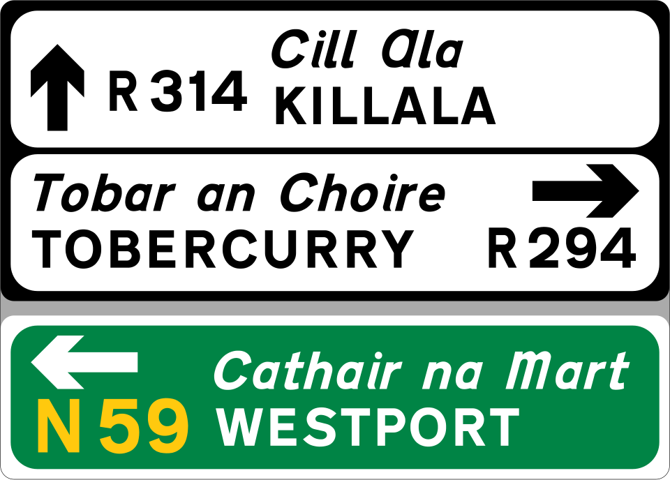
Stack Type Advance Direction Sign (regional road)
Stacked Sign, curry sandwish.
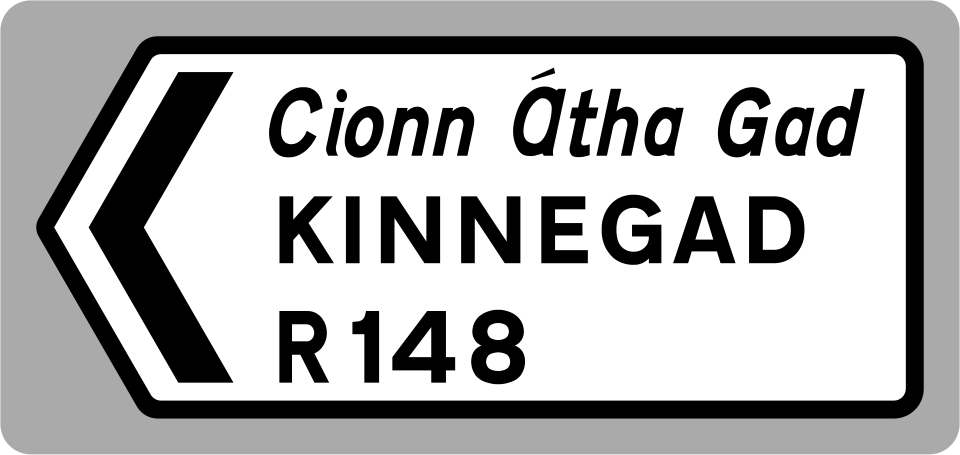
Direction Sign (regional road)
Direction sign for regional roads.
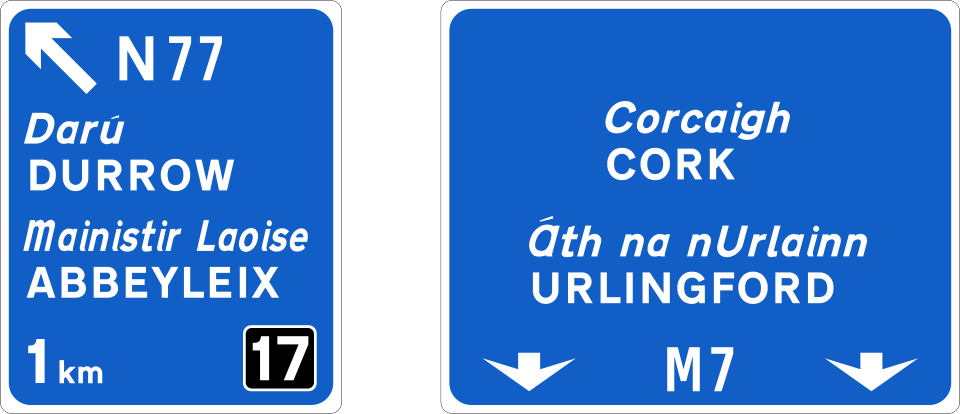
Overhead Gantry Sign (motorway, non-lane drop)
Cork might get tired of winning!
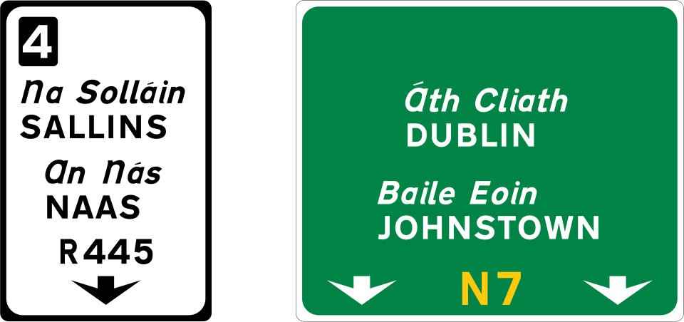
Overhead Gantry Sign (national road, lane drop)
1 for Dublin.
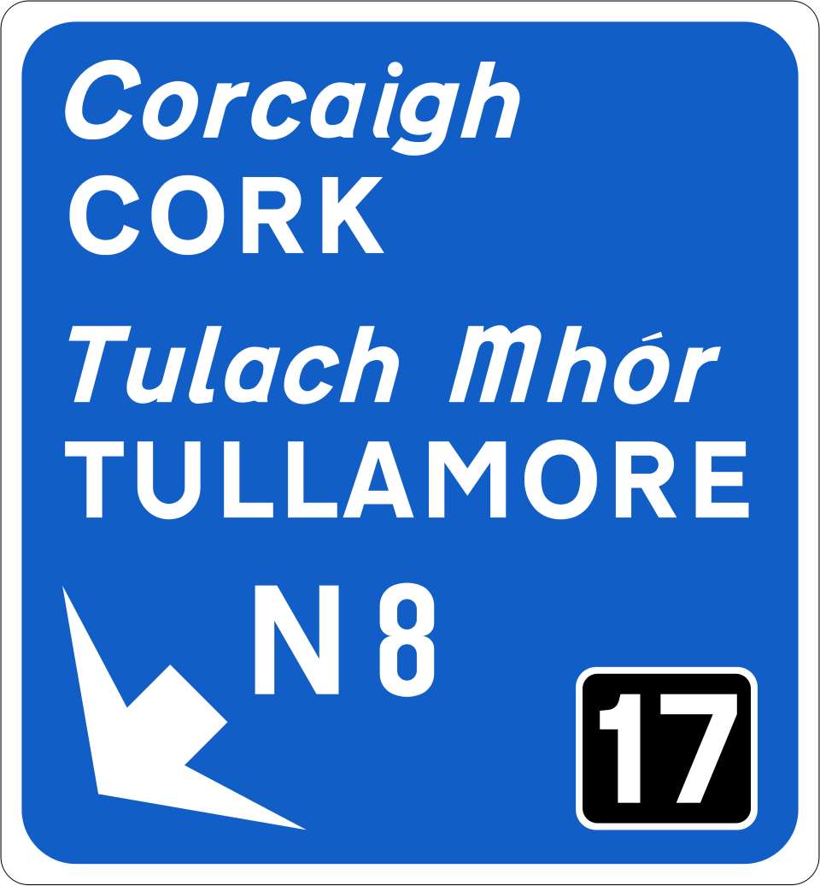
Exit Taper Gantry Sign (motorway)
Tullamore sounds French.
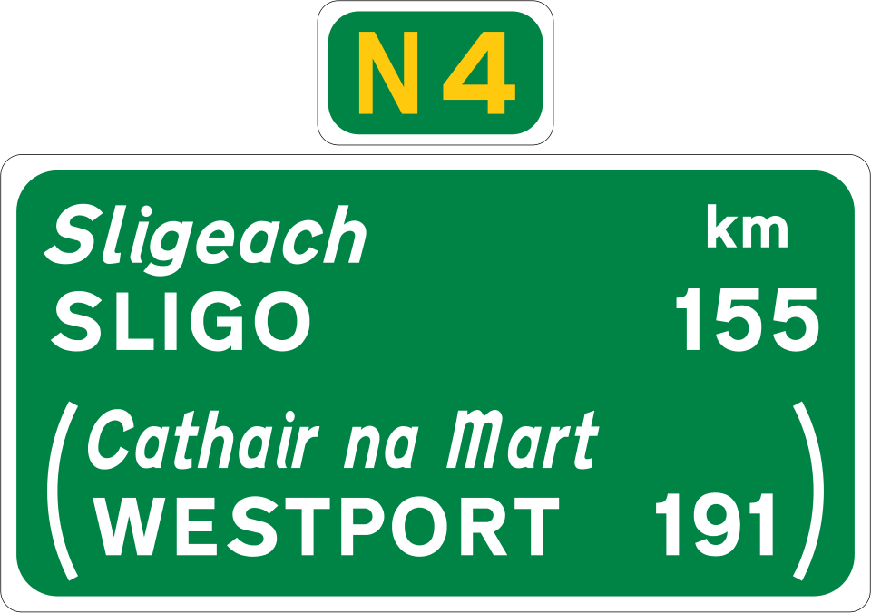
Route Confirmatory Sign (national road)
Route Confirmatory Sign for national road.

Next Exit Sign (motorway)
There's an exist next, on this motorway.
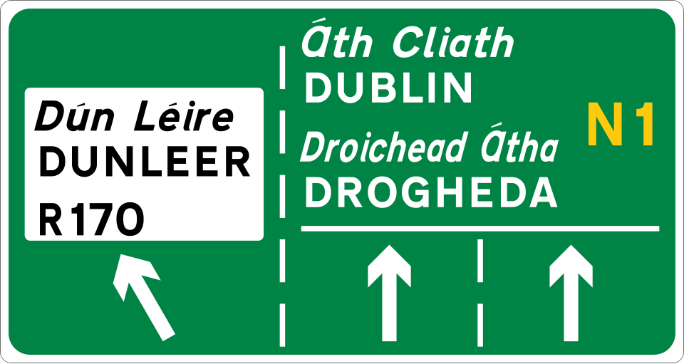
Lane Destination Sign (national road)
See which lane leads to where.
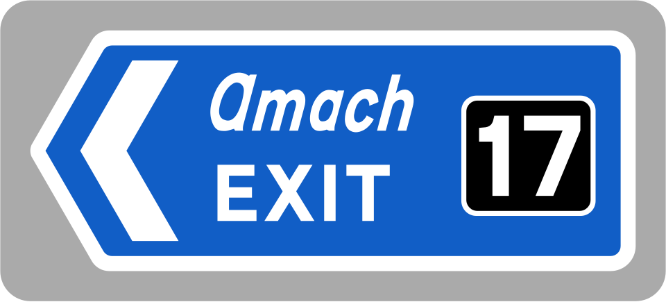
Exit Sign (motorway)
Finally, it's over.